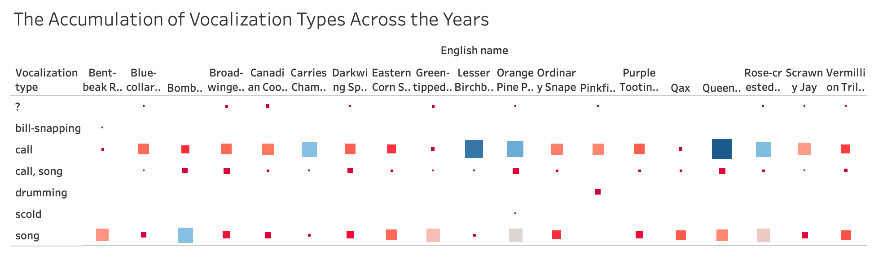
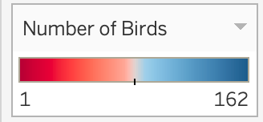
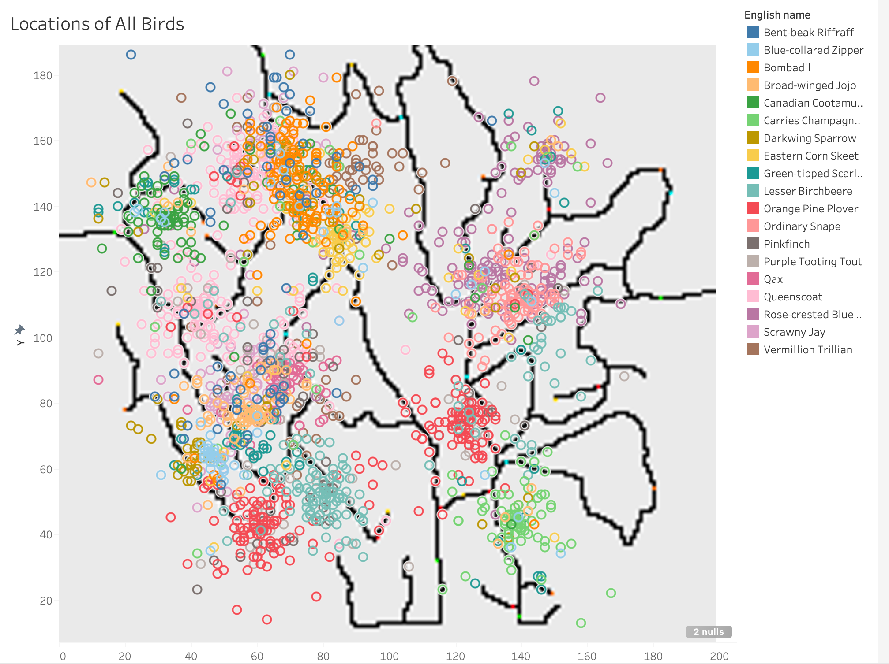
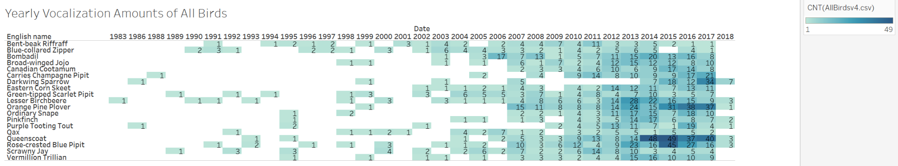
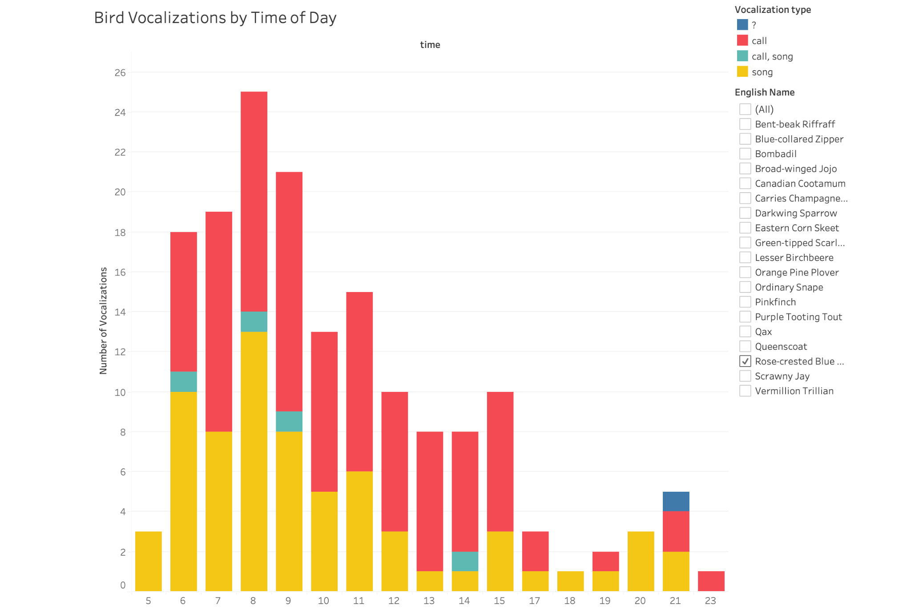
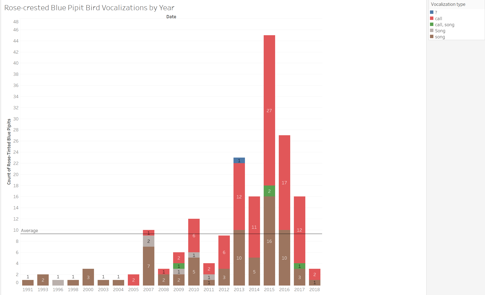
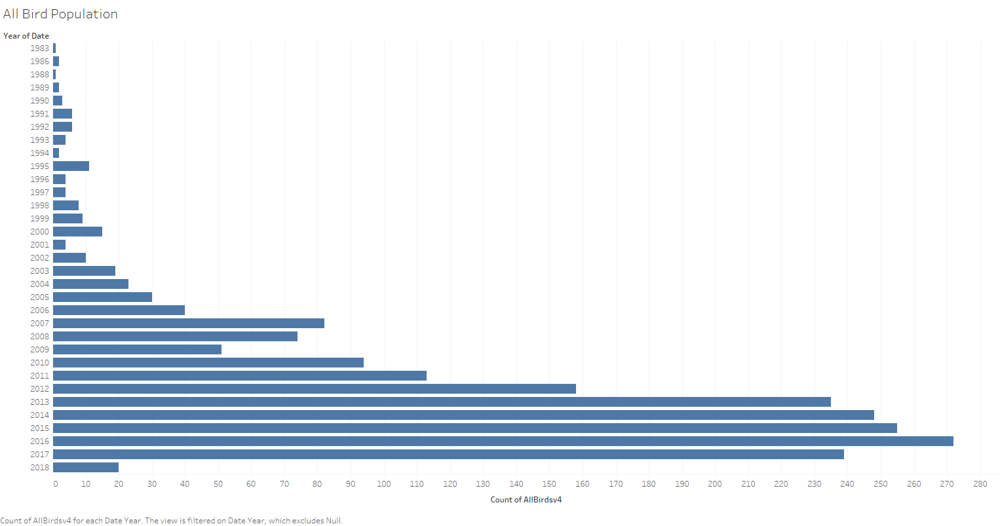

Rose-crested Blue Pipit Counts Project
Hello! This is a project focused on the visualization of a bird population dataset.
This project began with the use of Tableau to visualize the data, providing focus towards every species in the dataset.
After this, we made the visualizations linked above using D3.js. Click the links above to see the visualizations.
Below are some of the Tableau visualizations we made.







Project by Chris Comito, Wilson Cheong, Khairi Spearman, and Jacob Stigum